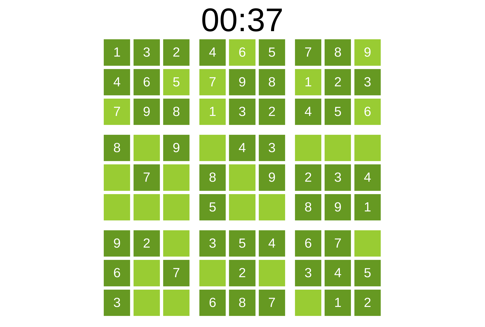

Судоку из 2015 года

Давным-давно, в далёкой-далёкой галактике… Судоку! Кхем, ну, может быть, и не очень давно и в не очень далёкой галактике. Вполне в нашей и ровно 10 лет назад.
В январе-феврале 2015 года я очень интересовался веб-разработкой. Понимание бэкенда у меня тогда уже появилось, ведь я немного успел поработать в роли BE разработчика. А вот фронтенд был мистикой… И нужно было что-то c этим делать.
Тогда только появился и набирал популярность React. Большинство JavaScript проектов использовали jQuery или вовсе строились на динамике XMLHttpRequest. Чуть более стильные решения использовали Knockout.js или Backbone.js… Ах да, был ещё Dojo. И мириада других решений a-la jQuery + плагины или виджеты.
Что я не брал в руки, мне не особо нравилось то, что программирование деталей куда-то скрывалось. Хотелось поработать с чистым JavaScript и HTML. Интерес у меня был тогда и к SVG. Логичным показалось совместить всё в одном флаконе.
Под руку как раз попалось пару примеров того, как можно собирать свои судоку. Сложив всё вместе, я приступил к имплементации. Несколько часов на протяжении месяца дали отличный опыт работы с JavaScript, HTML, SVG, Git и даже Nginx.
Когда самая базовая прототипная версия была готова, я положил Git репу в архив. Свою задачу проект выполнил, опыт был получен. Публиковать его я не решился.
Пересматривая архивы на буднях, я решил всё-таки достать судоку. Интересно стало, а будет ли всё работать? Пройдёт ли судоку испытание временем?
Прошёл. Да ещё как! Я изменил всего 2 строки в коде.
Одну строку в style.css. Там font-family был указан как sans-serif. Это ошибка, т.к. здесь нет указания ни одного конкретного семейства шрифтов. Firefox подставил DejaVu Sans и весь текст просто разъехался. Поменял шрифты на набор Arial, Helvetica, sans-serif. Это стандартная практика web safe fonts.
Вторая строка изменений – текст в <title> у HTML. Там была версия PROTOTYPE, не смотря на то, что я уже точно определил первую версию в Git. Теперь там версия v2. Столько времени уже прошло… Странно было бы назвать это v1.
Больше ничего не потребовалось менять, фух! Но, есть куда стремиться.
Cудоку обладает парой изъянов. К примеру, нет никаких подсказок при дублировании цифр в строке, столбце или квадрате 3x3. Ещё одна значимая проблема – слабая рэндомизация. Генерация судоку происходит из одного корневого решения и ряда случайных трансформаций. Этого оказалось недостаточно и нужен более умный алгоритм перестановок или иное корневое решение. Сейчас можно увидеть расстановку цифр подряд, что несколько снижает спортивный интерес…
Скриншот в начале заметки хорошо отражает ситуацию. Удалось попасть на вариант, где никакие трансформации почти не применены… Субоптимально, конечно.
Не смотря на недостатки, проект я решил выложить. Так больше шансов его не забыть и вернуться к нему в будущем. Найти судоку можно в репозитории на GitHub. Для удобства проект развёрнут на GitHub Pages.
Журнал изменений
1 января 2026 г.: перенёс исходники на GitHub.